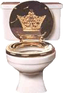
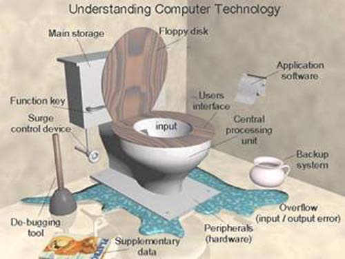
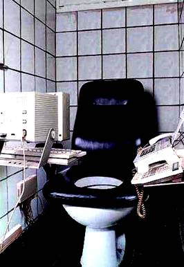
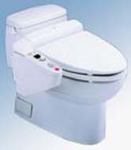
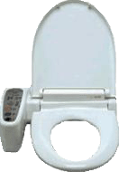
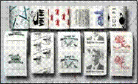

|
CLICK (gently!) on Granny's
|
 |
to close this page.
|
catalogues any more to look at - but who needs them?
This is the 21st century - we've got computers!
TOILETS WITH PIZZAZZ! (Lots of
Humour)
WHAT????
WHAT????
I know what you are thinking: “What???? A respectable pastor’s wife putting an article about toilets on her website?” First, this pastor’s wife is a paraplegic (since 1948), and that should say it all: physically disabled people have an added challenge in life, and that is, toilet accessibility. One day when I was browsing through websites, I came across two “fun” toilets built on scooters (pictures down farther). Well, one thing led to another. I have struggled with outhouses, bed pans, chamber potties, Japanese toilets, lagoon toilets in Micronesia, toilets located at the bottom of flights of stairs, low toilets I cannot get off, and on and on. So I have succumbed to temptation to tackle this rather crude subject, and I think you will enjoy the humorous graphics I’ve been able to find. The following topics will be discussed:
DON’T WASTE TIME IN THE BATHROOM – REVIEW YOUR COMPUTER TECHNOLOGY!
FOR THE BUSY EXECUTIVE
SCOOTERS WITH UNIQUE TOILETS
AQUARIUM TOILETS
PACIFIC ISLAND “OUTHOUSE”
FASCINATING JAPANESE TOILETS
FANCY TOILETS, SEATS, and TOILET TISSUE
PICTURES OF OLD OUTHOUSES
A READING ABOUT “THE SPECIALIST” WHO BUILT OUTHOUSES

I was raised in the big city of Vancouver, and flush toilets - well - didn't everyone in the world have one? Two years after Fred and I were married, we did some mission work in a rural area in Alberta. I soon learned about "outhouses" in a hurry! And in the middle of the night, one used a chamber potty instead of walking out in sub-zero weather to the outhouse.
And then came polio when I was age 22 and 7 months' pregnant. I spent a total of seven months in the hospital, and because I was unable to walk during those months, the dreaded bed pan became part of my life. Ugh! I would have preferred walking to the outhouse even in sub-zero weather!
There was a family of nine children at one of our rural churches, and I noticed that each Sunday without fail, one by one the children left the service to use the make-shift bathroom facility in the church basement. Why? I pondered. One day, the answer hit me - can you imagine wanting to go to the snow-covered outhouse when you could use an indoor facility? Smart kids.
In 1949 we went to Fred's first pastorate in a rural area. From 1949 until 1965, none of the churches we served had flush toilets. Most of them had a tiny toilet with a bucket tucked away in the basement. For my part, stairs were almost impossible to maneuver, and I am so thankful that on only several occasions did I have to be carried up and down the stairs to use the make-shift plumbing. When we visited homes which had no indoor plumbing, it was always a humiliating experience for me to be taken to a bedroom to use the "potty." I appreciated the kindness and understanding of our church people who looked after me so gallantly.
Physically disabled people are forced into thinking ahead about toilet accessibility when they leave the house. Are there wheelchair accessible toilet facilities? Although most shopping centers have designated areas, I would challenge an able-bodied person to try getting into some of the handicapped stalls or small rooms with a wheelchair. In one mall, I could get my wheelchair in the door, only to find there wasn't room enough to close the door without going through some wheelchair gymnastics to get it into the right spot. In another mall, I could get into the bathroom, but couldn't back up far enough to grasp the door handle to get out. So I would wait until I heard footsteps and call out to someone to open the door, and then I would back up when the door was opened and be able to get out.
Churches have to be the worst places for handicapped people. In our membership church, I asked for a certain type of handle to be placed on the door to the handicapped stall to make it easier for disabled people to shut the door. Four years went by. Finally, the trustees placed the handle (which probably cost about $2.00) on the door - but they put it on the OUTSIDE of the door instead of on the INSIDE!!!! Whew! It was at this same church that one of my friends needed to help her handicapped husband in the washroom. When she came out of the washroom with him, one of the church members gave her a tongue-lashing for going into the men's washroom. Because of this, whenever I hear of a new church being built or renovated, I phone the building committee and suggest to them that they make one large washroom to be used by either men or women, so in case a spouse is required to help, both can go in. A flip-down wall table could also be installed for changing babies, thus getting more usage out of the special room.
Now that my muscle power is weaker, I am unable to rise from a standard toilet without help; I need to have a riser on my toilet at home. So - like other physically disabled people - I have to think when I am invited to be a guest speaker at a function or go to a friend's home: will I be able to manage the toilet facility?
Therefore, please forgive me for delving into this topic. Many disabled people like myself have great challenges in this aspect of life.
concerning this rather delicate topic,
so please explore them and have a good laugh!
DON'T WASTE TIME IN THE BATHROOM
-
Review your computer terminology!
Review your computer terminology!

FOR THE BUSY EXECUTIVE
Here's a deluxe toilet setting - everything is within
reach.
SCOOTERS WITH UNIQUE
TOILETS
|
|
CAUTION:
This is what is called a "public" toilet. Everyone can see what you are doing. |
|
This model
gives you a little more privacy - and when it's raining, you won't get wet! |
|
AQUARIUM TOILETS
|
|
Why not have a beautiful
toilet tank - You can make it into an aquarium, or you can stock it with trout and enjoy fishing while attending to other business. |
You can even get aquatic-theme toilet seats!
PACIFIC ISLAND "OUTHOUSE"
 |
YOU GOTTA BE KIDDING!!!!!!!!!
Wow! Aren't you glad you don't have to navigate your wheelchair to thiskind of an outhouse? You'd probably want to wear a life-belt
in case you tipped over!
The above picture is from a friend in New Guinea.
But in 1977, our family was in Yap, Micronesia,
and this type of toilet was being used.
Yuk! The Yapese residents had no qualms about swimming in the lagoon,
even though it was polluted.
However, we were fortunate enough to have an indoor toilet
while we were there.
(Note: the "wheelchair accessible" sign was added
to the picture by me - just for a laugh.)
JAPANESE TOILETS
In 1977 I was selected to go with a group of handicapped people, along with a medical doctor and therapists, to visit rehabilitation centers and other places of interest in Japan. It was an exciting three weeks trip for all of us. My daughter Susan was teaching ESL in Japan, and I bought her way into our tour for one week. I also visited in some of the Japanese homes. Alas! Toilet facilities in many places in Japan are not for handicapped people. As a result, the medical personnel brought along a special commode with a folding stand. When the group went into a restaurant, for example, the commode was brought along and set up in the washroom for our use.
Most of us refrained from drinking coffee, tea, juices or water when a two or three hour bus trip was on the schedule. There were no garages to stop at along the way. Our hotels had "western" type plumbing - what a relief! At the Yahama golf resort, the rooms were cold. The only way to find warmth was to sit on the toilet. The toilet seat was HEATED! My daughter and I shared a room. It was extremely cold in the room - but ironically, the toilet SEAT had a heating element in it - so at least that part of one's anatomy was warm!!!
THE ADVERTISING SAYS:
These super comfortable seats have a molded-in 12 volt Thermal Circuit
heatingelement that heats to a comfortable 20 to 25 degrees above room temperature.
Treat yourself to a heated toilet seat.
It is an unexpected pleasure that the whole family will enjoy everyday.
Try the heated UltraTouch seat and you will never want to sit on another seat again!
A heated UltraTouch seat Makes a Great Gift
Economical - uses only 12 watts of electricity.
Only 1/5th the power of a 60 watt lightbulb!
Costs only pennies a day to operate. Plug it in and forget it.
Relaxing warmth will spoil you for life!
CAN BE SAFELY PUT IN THE DISHWASHER!
EEEEEKKKKK
(HOW WOULD YOU LIKE TO PUT A TOILET SEAT IN YOUR DISHWASHER?????)
(HOW WOULD YOU LIKE TO PUT A TOILET SEAT IN YOUR DISHWASHER?????)
 
Controls for the heating element
are in the arm of the toilet seat.
NOW HERE'S A MOST PRACTICAL TYPE OF TOILET
WHICH IS IN MANY APARTMENTS/HOMES IN JAPAN
WHICH IS IN MANY APARTMENTS/HOMES IN JAPAN
AND NOW FOR A REMINDER OF THE "GOOD
OLD DAYS"
What a mess!
(I know this to be a true story - these people were all members at Fred's church.
Now how would you address this crisis situation in a sermon???)
The top unit is for the ABLE-BODIED
The ground level unit is for the DISABLED
TRYING TO ESCAPE MAY BE HAZARDOUS TO YOUR HEALTH
FANCY TOILET PAPER FOR A RITZY
BATHROOM
For your
Christmas theme |
 |
Oh - if this
money was only real! |
"TALKING" TOILET PAPER
|
TALKING TOILET PAPER is this year's hottest gag gift! It
can also come in very handy to remind the kids to wash their hands after going
to the bathroom or reminding adults to put the seat down. Just record your very
own voice message that's heard whenever anyone unrolls some toilet paper!
"Don't forget to wash your hands!"
"Will you marry me?" "Please remain seated during the performance." "This is a bathroom not a library!" |
THE ADVERTISING SAYS:
Hilarious way to surprise your friendsEasy to record and re-record your own messages
Fits all toilet paper roll holders. Installs in seconds.
Years of fun. Convenient on/off switch
It's like having bathroom voice/mail!
The talking toilet-paper roll would be a terrific addition to any guest bathroom. You can record music on it, so your guests can enjoy, say, some classical music while they are "finishing their business." We also think this would be a great motivational tool for businesses. Picture the scene: You're an employee of a large corporation. You go to use the bathroom. When you grab some toilet paper, you hear the voice of your corporate CEO saying: "Hurry up! As long as you're in here, you are wasting company time. But seriously, please limit yourself to two squares of toilet tissue."
THE SPECIALIST
(BUILDING AN OUTHOUSE)You've heard a lot of prating and prattling about this being the age of specialization. I'm a carpenter by trade. At one time I could of built a house, barn, church, or chicken coop. But I seen the need of a specialist in my line, so that's when I decided to specialize in outhouses, more politely known as a privy.
And now I am proud to say that I am the champion privy builder of Sangamon County. Luke Harkins was my first customer. He heard about my specializing and decided to take a chance. I built for him the average eight family, three holer. With that job my reputation was made, and since then I have devoted all my time and thought to that special line. Of course, when business is slack, I do a little paperhanging on the side. But my heart is just in privy building. And when I finish a job, I ain't through. I give all my customers six months' privy service free gratis. I explained this to Luke, and one day he called me and said, "Lem, I wish you'd come out here, I'm having privy trouble." So I got in the car and drove out to Luke's place and hid behind the trees where I could get a good view of the situation.
It was right in the middle of haying time, and them hired hands was going in and staying anywheres from forty minutes to an hour. Think of that! I sez: "Luke, you sure have got privy trouble." So I takes out my kit of tools and goes in to examine the structure. First I looks at the catalogue hanging there. I thought maybe they were spending time reading it, but it wasn't from a familiar store. Next, I looked at the seats proper, and I immediately saw what the trouble was. I had made them holes far too comfortable. So I gets out a scroll saw and cuts them square with hard edges. Then I go back and takes up my position as before - behind the grove of trees - and I watched them hired hands going in and out for nearly two hours. I timed them with my clock and not one of them was staying more then four minutes. "Luke," I said, "I've solved your problem." Now that's what comes of being a specialist!
It wasn't long after I built that twin job for the school house, then after that the biggest privy ever - an eight holer. Elmer Ridgway was down and looked it over. And he came to me one day and sez: "Lem, I seen that eight hole job you done down there at the Corners, and it sure is a dandy; and figuring as how I'm going to build on the old Roberson property, I thought I'd ask you to kind of estimate on a job for me." "You come to the right man, Elmer," I said. "I'll be out as soon as I get the roof on the two-seater I'm putting up for the Sheriff."
Couple of days later I drives out to Elmer's place, getting there about dinner time. I knocks a couple of times on the door and I see they got a lot of folks to dinner, so not wishing to disturb them, I sneaks around to the side door and yells: "Hey, Elmer, here I am; where do you want that privy put?" Elmer comes out, and we get to talking about a good location. He was all for putting her right alongside a jagged path running by a Northern Spy. "I wouldn't do it, Elmer," I said; "and I'll tell you why. In the first place, her being near a tree is bad. There ain't no sound in nature so disconcerting as the sound of apples dropping on the roof. Then another thing, there's a crooked path running by that tree and the soil there ain't adapted to absorbing moisture. During the rainy season she's likely to be slippery. Take your grandpappy - going out there is about the only recreation he gets. He'll go out some rainy night with his nighty flapping around his legs, and like as not when you come out in the morning you'll find him prone in the mud or maybe skidded off one of them curves and wound up in the corn crib."
"No, sir," I sez, "put her in a straight line with the house and, if it's all the same to you, have her go past the woodpile. I'll tell you why. Take a woman, for instance - out she goes. On the way she'll gather five sticks of wood, and the average woman will make four or five trips a day. There's twenty sticks in the wood box without any trouble. On the other hand, take a timid woman: if she sees any men folks around, she's too bashful to go direct out so she'll go to the woodpile, pick up the wood, go back to the house and watch her chance. The average timid woman - especially a new hired girl - makes as many as ten trips to the woodpile before she goes in, regardless. On a good day you'll have the wood box filled by noon, and right there is a saving of time."
"Now, about the digging of her. You can't be too careful about that," I sez; "dig her deep and dig her wide. It's a mighty sight better to have a little privy over a big hole than a big privy over a little hole. Another thing; when you dig her deep you've got 'er dug; and you ain't got that disconcerting thought stealing over you that sooner or later you'll have to dig again."
"And when it comes to construction," I sez, "I can give you joists or beams. Joists make a good job. Beams cost a bit more, but they're worth it. Beams, you might say, will last forever. 'Course I could give you joists, but take your Aunt Emmy. She ain't getting a mite lighter. Some day she might be out there when them joists give way and there she'd be - flat on her face."
"And about her roof," I sez, "I can give you a lean-to type of a pitch roof. Pitch roofs cost a little more, but some of the best people has lean-tos. If it was for myself, I'd have a lean-to and I'll tell you why. A lean-to has two less corners for the wasps to build their nests in; and on a hot August afternoon there ain't nothing so disconcerting as a lot of wasps buzzin' 'round while you're sitting, doing a little reading, figuring or thinking. Another thing,a lean-to gives you a high door. Take that son of yours, shooting up like a weed. If he was tryin' to get under a pitch roof door he'd crack his head every time. Take a lean-to, Elmer; they ain't stylish, but they're practical."
"Now, about her furnishings. I can give you a nail or hook for the catalogue, and besides, a box for cobs. You take your pa for instance: he's of the old school and naturally he'd prefer the box; so put 'em both in, Elmer. Won't cost you a bit more for the box and keeps peace in the family. You can't teach an old dog new tricks, And as long as we're on the furnishings, I'll tell you about a technical point that was put to me the other day."
"What kind of a latch should we put on the door? I can give you a spool and string, or a hook and eye. The cost of a spool and string is practically nothing but they ain't positive in action. If somebody comes out and starts rattling the door, either the spool or the string is apt to give way, and there you are. But, with a hook and eye she's yours, you might say, for the whole afternoon, if you're so minded. Put on the hook and eye of the best quality 'cause there ain't nothing that'll rack a man's nerves more than to be sitting there pondering, without a good, strong, substantial latch on the door."
"Now, what about windows; some want 'em, some don't. They ain't so popular as they used to be. If it was me, Elmer, I'd say no windows, and I'll tell you why. Take, for instance, somebody coming out - maybe they're just in a hurry or maybe they waited too long. If the door don't open right away, and you won't answer them, nine times out of ten they'll go 'round and 'round and look in the window, and you don't get the privacy you ought to."
"Now, about ventilators, or the designs I cut in doors. I can give you stars, diamonds, or crescents - there ain't much choice - all give good service. A lot of people like stars, because they throw a ragged shadow. Others like crescents 'cause they're graceful and simple. Last year we was cutting a lot of stars; but this year people are kinda quieting down and running more to crescents. I do cut twining hearts now and then for young married couples, and bunches of grapes for the newly rich. These last two designs come under the head of novelties, and I don't very often suggest them because it takes time and runs into money."
"I wouldn't make any snap judgment on her ventilators, Elmer, because they've got a lot to do with the beauty of the structure. And don't over-do it, like Doc Turner did. He wanted stars and crescents both, against my better judgement, and now he's sorry. But it's too late; 'cause when I cut them, they're cut. You can get mighty tired, sitting day after day looking at a ventilator that ain't to your liking."
"Now, how do you want that door to swing? Opening' in or out? Elmer said he didn't know. So I said it should open in. This is the way it works out: Place yourself in there. The door opening in, say about forty-five degrees. This gives you air and lets the sun beat in. Now, if you hear anybody coming, you can give it a quick shove with your foot and there you are. But if she swings out, where are you? You can't run the risk of having her open for air or sun, because if anyone comes, you can't get up off that seat, reach way around and grab her without getting caught."
"So I built his door like all my doors, swinging in, and, of course, facing east to get the full benefit of the sun. And I tell you, there ain't nothing more restful than to get out there in the morning, comfortable seated, with the door about three-fourths open. The old sun beating in on you, sort of relaxes a body - makes you feel m-i-g-h-t-y, m-i-g-h-t-y r-e-s-t-f-u-l."
"And what about the paint job? What color do you want her? Well, Elmer said 'red' but I tried to reason with him. I can paint her red, and red makes a beautiful job; or I can paint her a bright green, or any one of a half dozen other colors, and they're all mighty pretty; but it ain't practical to use a single solid color, and I'll tell you why. She's too hard to see at night. You need contrast - just like they use on the railroad crossing bars - so you can see them in the dark. If I was you, I'd paint her a bright red with white trimmings - just like your barn. Then she'll match up nice in the daytime, and you can spot her easy at night, when you ain't got much time to go scouting around."
"There's a whole lot more to building a privy than you think. Just take a look at your neighbor's privy. Why one of the worst tragedies around here in years was because old man Clark's boys thought they knowed something about this kind of work and they didn't. Old man Clark lives over there across the hollow with his boys. He asked me to come over and estimate on their job. My price was too high, so they decided to do it themselves. And that's where the trouble begun. I was doing a little paperhanging at the time for the widow that lives down past the creamery. As I'd drive by, I could see the boys a-working. Of course, I didn't want to butt in, so used to just hollar at them on the way by and say, neighborly like: 'Hey, boys, see you're doin' a little building.' You see, I didn't want to act like I was butting in on their work; but I knowed all the time they was going to have trouble with that privy. And they did. From all outside appearance it was a regulation job, but not being experienced along this line, they didn't anchor her."
"You see, I put a four by four that runs from the top straight on down five foot into the ground. That's why you never see any of my jobs upset Hollowe'en night. They might pull them out, but they'll never upset them. Here's what happened: They didn't anchor theirs, and they painted it solid red - two bad mistakes. Hallowe'en night come along, darker than pitch. Old man Clark was out in there. Some of them devilish neighbor boys was out for no good, and they upset her with the old man in it."
"Of course, the old man got to shouting, and his boys heard the noise. One of 'em said: 'What's the racket? Somebody must be at the chickens.' So they took the lantern and started out to the chicken shed. They didn't find anything wrong there, and they started back to the house. Then they heard the dog bark over by the privy. So they set out, but since the privy was painted red, they didn't see it. In the meantime, the old man had gotten so confused that he started to crawl out through the hole, yelling for help all the time. The boys recognized his voice and come running, but just as they got there, he lost his hold and fell. After that they just called - didn't go near him. Because of the smell, they wouldn't dare go near the old man."
"Sometimes, when I get to feeling blue and thinking I hitched my wagon to the wrong star, and maybe I should have took up chiropracty or veternary, I just pack the little woman and the kids in the back of my car and start out, aiming to arrive at Elmer's place about dusk. When we gets to the top of the hill overlooking his place, we stops. I slips the gear in mutual, and we just set there looking at the beautiful sight. There sits the privy on that knoll near the woodpile, painted red and white, morning glories growing up over her, and Mr. Sun bathing her in a burst of yeller color as he drops back of them hills. You can hear the dog barking in the distance, bringing the cows up fer milking and the slow squeak of Elmer's windmill pumping away day after day the same as me."
"As I look at the beautiful picture of my work, I'm proud. I heaves a sigh of satisfaction, my eyes fill up and I say to myself: 'Folks are right when they say that next to my eight holer that's the finest piece of construction work I ever done. I know I done right in specializing; I'm sittin' on top of the world; and I hope that boy of mine who is growing up like a weed keeps up the good work when I'm gone.' With one last look as we pulls away, I slips my arm around the Missus, and I sez, 'Nora, Elmer don't have to worry, he's a boy that's got himself a privy - not just any privy - but a m-i-g-h-t-y, m-i-g-h-t-y, p-r-e-t-t-y p-r-i-v-y."
|
CLICK (gently!) on Granny's
|
|
to close this page.
|